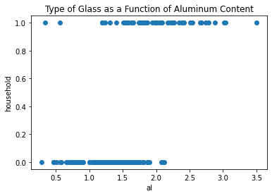
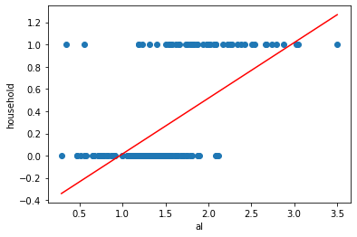
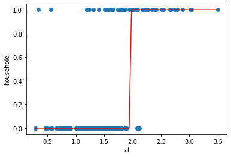
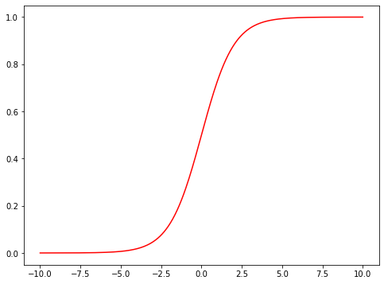
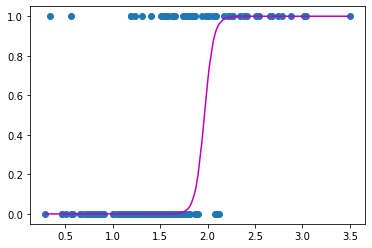
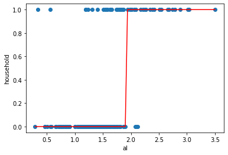
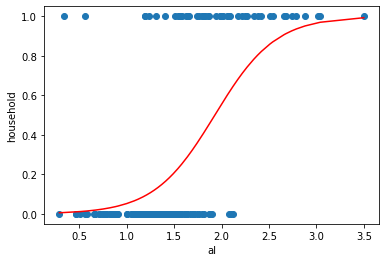

Logistic Regression: Beyond Linear Regression#
import pandas as pd
import numpy as np
from matplotlib import pyplot as plt
import seaborn as sns
from sklearn.linear_model import LinearRegression, LogisticRegression
from scipy.special import logit, expit
from sklearn.metrics import log_loss
from sklearn.model_selection import train_test_split
# expit()
Classification techniques are an essential part of machine learning and data mining applications. Approximately 70% of problems in Data Science are classification problems. There are lots of classification algorithms that are available, but logistic regression is exceedingly common and useful. We shall focus on binary classification problems, to which logistic regression most immediately applies. Other classification problems handle the cases where multiple classes are present in the target variable, though logistic regression can be extended to cover this sort of case as well. The iris dataset is a very famous example of multi-class classification.
Logistic Regression is one of the most simple and commonly used Machine Learning algorithms for two-class classification. It is easy to implement and can be used as the baseline for any binary classification problem. Its basic fundamental concepts are also constructive in deep learning. Logistic regression describes and estimates the relationship between one dependent binary variable and independent variables.
Agenda#
SWBAT:
describe conceptually the need to move beyond linear regression;
explain the relationship between probability and odds;
explain the form of logistic regression;
explain how to interpret logistic regression coefficients;
describe different generalizations of linear regression for different scenarios.
Beyond Linear Regression#
Linear regressions have limitations.
As it stands, the algorithm could generate a prediction anywhere on the real number line. This may be realistic, like if I’m predicting national surpluses/debts.
But what if I’m predicting values of a variable that doesn’t take, say, negative values, like temperature in Kelvin?
What if I’m predicting values of a variable that takes only integer values, like the number of mouseclicks on my killer ds blog per minute?
What if I’m predicting probabilities? Or something Boolean / Bernoullian?
What if the shape of my errors changes as a function of the dependent variable?
Am I stuck using linear regression? There’s got to be a better way!
Predicting a Categorical Response#
Here we have a dataset about glass. Information here.
# glass identification dataset
url = 'http://archive.ics.uci.edu/ml/machine-learning-databases/glass/glass.data'
col_names = ['id','ri','na','mg','al','si','k','ca','ba','fe','glass_type']
glass = pd.read_csv(url, names=col_names, index_col='id')
glass.sort_values('al', inplace=True)
glass.head()
| ri | na | mg | al | si | k | ca | ba | fe | glass_type | |
|---|---|---|---|---|---|---|---|---|---|---|
| id | ||||||||||
| 22 | 1.51966 | 14.77 | 3.75 | 0.29 | 72.02 | 0.03 | 9.00 | 0.0 | 0.00 | 1 |
| 185 | 1.51115 | 17.38 | 0.00 | 0.34 | 75.41 | 0.00 | 6.65 | 0.0 | 0.00 | 6 |
| 40 | 1.52213 | 14.21 | 3.82 | 0.47 | 71.77 | 0.11 | 9.57 | 0.0 | 0.00 | 1 |
| 39 | 1.52213 | 14.21 | 3.82 | 0.47 | 71.77 | 0.11 | 9.57 | 0.0 | 0.00 | 1 |
| 51 | 1.52320 | 13.72 | 3.72 | 0.51 | 71.75 | 0.09 | 10.06 | 0.0 | 0.16 | 1 |
# examine glass_type
glass.glass_type.value_counts().sort_index()
1 70
2 76
3 17
5 13
6 9
7 29
Name: glass_type, dtype: int64
# types 1, 2, 3 are window glass
# types 5, 6, 7 are household glass
glass['household'] = glass.glass_type.map({1:0, 2:0, 3:0, 5:1, 6:1, 7:1})
glass.head()
| ri | na | mg | al | si | k | ca | ba | fe | glass_type | household | |
|---|---|---|---|---|---|---|---|---|---|---|---|
| id | |||||||||||
| 22 | 1.51966 | 14.77 | 3.75 | 0.29 | 72.02 | 0.03 | 9.00 | 0.0 | 0.00 | 1 | 0 |
| 185 | 1.51115 | 17.38 | 0.00 | 0.34 | 75.41 | 0.00 | 6.65 | 0.0 | 0.00 | 6 | 1 |
| 40 | 1.52213 | 14.21 | 3.82 | 0.47 | 71.77 | 0.11 | 9.57 | 0.0 | 0.00 | 1 | 0 |
| 39 | 1.52213 | 14.21 | 3.82 | 0.47 | 71.77 | 0.11 | 9.57 | 0.0 | 0.00 | 1 | 0 |
| 51 | 1.52320 | 13.72 | 3.72 | 0.51 | 71.75 | 0.09 | 10.06 | 0.0 | 0.16 | 1 | 0 |
Let’s change our task, so that we’re predicting household using al. Let’s visualize the relationship to figure out how to do this:
fig, ax = plt.subplots()
ax.scatter(glass.al, glass.household)
ax.set_xlabel('al')
ax.set_ylabel('household')
ax.set_title('Type of Glass as a Function of Aluminum Content');

Let’s draw a regression line, like we did before:
# fit a linear regression model and store the predictions
linreg = LinearRegression()
feature_cols = ['al']
X = glass[feature_cols]
y = glass.household
linreg.fit(X, y)
glass['household_pred'] = linreg.predict(X)
# scatter plot that includes the regression line
fig, ax = plt.subplots()
ax.scatter(glass.al, glass.household)
ax.plot(glass.al, glass.household_pred, color='red')
ax.set_xlabel('al')
ax.set_ylabel('household');

What are some issues with the graph above?#
## Lots of Error
## Many predcictions are far from truth
If al=3, what class do we predict for household?
If al=1.5, what class do we predict for household?
We predict the 0 class for lower values of al, and the 1 class for higher values of al. What’s our cutoff value? Around al=2, because that’s where the linear regression line crosses the midpoint between predicting class 0 and class 1.
Therefore, we’ll say that if household_pred >= 0.5, we predict a class of 1, else we predict a class of 0.
# transform household_pred to 1 or 0
glass['household_pred_class'] = np.where(glass.household_pred >= 0.5, 1, 0)
glass.head()
| ri | na | mg | al | si | k | ca | ba | fe | glass_type | household | household_pred | household_pred_class | |
|---|---|---|---|---|---|---|---|---|---|---|---|---|---|
| id | |||||||||||||
| 22 | 1.51966 | 14.77 | 3.75 | 0.29 | 72.02 | 0.03 | 9.00 | 0.0 | 0.00 | 1 | 0 | -0.340495 | 0 |
| 185 | 1.51115 | 17.38 | 0.00 | 0.34 | 75.41 | 0.00 | 6.65 | 0.0 | 0.00 | 6 | 1 | -0.315436 | 0 |
| 40 | 1.52213 | 14.21 | 3.82 | 0.47 | 71.77 | 0.11 | 9.57 | 0.0 | 0.00 | 1 | 0 | -0.250283 | 0 |
| 39 | 1.52213 | 14.21 | 3.82 | 0.47 | 71.77 | 0.11 | 9.57 | 0.0 | 0.00 | 1 | 0 | -0.250283 | 0 |
| 51 | 1.52320 | 13.72 | 3.72 | 0.51 | 71.75 | 0.09 | 10.06 | 0.0 | 0.16 | 1 | 0 | -0.230236 | 0 |
glass.tail()
| ri | na | mg | al | si | k | ca | ba | fe | glass_type | household | household_pred | household_pred_class | |
|---|---|---|---|---|---|---|---|---|---|---|---|---|---|
| id | |||||||||||||
| 193 | 1.51623 | 14.20 | 0.00 | 2.79 | 73.46 | 0.04 | 9.04 | 0.40 | 0.09 | 7 | 1 | 0.912448 | 1 |
| 210 | 1.51623 | 14.14 | 0.00 | 2.88 | 72.61 | 0.08 | 9.18 | 1.06 | 0.00 | 7 | 1 | 0.957554 | 1 |
| 173 | 1.51321 | 13.00 | 0.00 | 3.02 | 70.70 | 6.21 | 6.93 | 0.00 | 0.00 | 5 | 1 | 1.027718 | 1 |
| 172 | 1.51316 | 13.02 | 0.00 | 3.04 | 70.48 | 6.21 | 6.96 | 0.00 | 0.00 | 5 | 1 | 1.037742 | 1 |
| 164 | 1.51514 | 14.01 | 2.68 | 3.50 | 69.89 | 1.68 | 5.87 | 2.20 | 0.00 | 5 | 1 | 1.268283 | 1 |
# plot the class predictions
fig, ax = plt.subplots()
ax.scatter(glass.al, glass.household)
ax.plot(glass.al, glass.household_pred_class, color='red')
ax.set_xlabel('al')
ax.set_ylabel('household');

Logistic Regression#
Logistic regression can do what we just did.
The strategy now is to generalize the notion of linear regression; linear regression as we’ve known it will become a special case. In particular, we’ll keep the idea of the regression best-fit line, but now we’ll allow the model to make predictions through some (non-trivial) transformation of the linear predictor.
Let’s say we’ve constructed our best-fit line, i.e. our linear predictor, \(\hat{L} = \beta_0 + \beta_1x_1 + ... + \beta_nx_n\).
Consider the following transformation:
\(\large\hat{y} = \Large\frac{1}{1 + e^{-\hat{L}}} \large= \Large\frac{1}{1 + e^{-(\beta_0 + ... + \beta_nx_n)}}\). This is called the sigmoid function.
We’re imagining that \(\hat{L}\) can take any values between \(-\infty\) and \(\infty\).
\(\large\rightarrow\) But what values can \(\hat{y}\) take? What does this function even look like?
# Let's plot this function here:
X = np.linspace(-10, 10, 300)
Y = 1 / (1 + np.exp(-X))
fig, ax = plt.subplots(figsize=(8, 6))
ax.plot(X, Y, 'r');

Interpretation#
This function squeezes our predictions between 0 and 1. And that’s why it’s so useful for binary classification problems.
Suppose I’m building a model to predict whether a plant is poisonous or not, based perhaps on certain biological features of its leaves. I’ll let ‘1’ indicate a poisonous plant and ‘0’ indicate a non-poisonous plant.
Now I’m forcing my predictions to be between 0 and 1, so suppose for test plant \(P\) I get some value like 0.19.
I can naturally understand this as the probability that \(P\) is poisonous.
If I truly want a binary prediction, I can simply round my score appropriately.
How do we fit a line to our dependent variable if its values are already stored as probabilities? We can use the inverse of the sigmoid function, and just set our regression equation equal to that. The inverse of the sigmoid function is called the logit function, and it looks like this:
\(\large f(y) = \ln\left(\frac{y}{1 - y}\right)\). Notice that the domain of this function is \((0, 1)\).
\(\hspace{110mm}\)(Quick proof that logit and sigmoid are inverse functions:
\(\hspace{170mm}x = \frac{1}{1 + e^{-y}}\);
\(\hspace{170mm}\)so \(1 + e^{-y} = \frac{1}{x}\);
\(\hspace{170mm}\)so \(e^{-y} = \frac{1 - x}{x}\);
\(\hspace{170mm}\)so \(-y = \ln\left(\frac{1 - x}{x}\right)\);
\(\hspace{170mm}\)so \(y = \ln\left(\frac{x}{1 - x}\right)\).)
Our regression equation will now look like this:
\(\large\ln\left(\frac{y}{1 - y}\right) = \beta_0 + \beta_1x_1 + ... + \beta_nx_n\).
This equation is used for a logistic regression. Note that it is now not the target variable itself that is modeled as varying linearly with the predictor(s) but rather the values of this logit function of the target that are so represented. This is the sense in which we have a more generalized notion of a linear model.
So: Instead of fitting a best-fit line (or plane or hyperplane) to the target itself, we’ll fit it to the log-odds of the target.
This function whose values are modeled as varying linearly is in general called the link function.
Odds#
There are other ways to squeeze the results of a linear regression into the set (0, 1).
But the ratio \(\frac{p}{1-p}\) represents the odds of some event, where \(p\) is the probability of the event.
Examples:
Dice roll of 1: probability = 1/6, odds = 1/5
Even dice roll: probability = 3/6, odds = 3/3 = 1
Dice roll less than 5: probability = 4/6, odds = 4/2 = 2
And so the logit function represents the log-odds of success (y=1).
Fitting a Line to \(Logit(target)\)#
Let’s try applying the logit function to our target and then fitting a linear regression to that. Since the model will be trained not on whether the glass is household but rather on the logit of this label, it will also make predictions of the logit of that label. But we can simply apply the sigmoid function to the model’s output to get its predictions of whether the glass is household.
We can’t use the target as is, because the logit of 1 is \(\infty\) and the logit of 0 is \(-\infty\).
glass['household'].unique()
array([0, 1])
logit(glass['household']).unique()
array([-inf, inf])
So we’ll make a small adjustment:
target_approx = np.where(glass['household'] == 0, 1e-9, 1-1e-9)
line_to_logit = LinearRegression()
X = glass[['al']]
y = logit(target_approx)
line_to_logit.fit(X, y)
LinearRegression()
fig, ax = plt.subplots()
final_preds = expit(line_to_logit.predict(X))
ax.scatter(X, glass['household'])
ax.plot(X, final_preds, 'm');

sklearn.linear_model.LogisticRegression()#
In general, we should always scale our data when using this class. Scaling is always important for models that include regularization, and scikit-learn’s LogisticRegression() objects have regularization by default.
Here we’ve forgone the scaling since we only have a single predictor.
# fit a logistic regression model and store the class predictions
logreg = LogisticRegression(random_state=42)
feature_cols = ['al']
X = glass[feature_cols]
y = glass.household
logreg.fit(X, y)
glass['household_pred_class'] = logreg.predict(X)
# plot the class predictions
fig, ax = plt.subplots()
ax.scatter(glass.al, glass.household)
ax.plot(glass.al, glass.household_pred_class, color='red')
ax.set_xlabel('al')
ax.set_ylabel('household');

.predict() vs. .predict_proba()#
glass.al
id
22 0.29
185 0.34
40 0.47
39 0.47
51 0.51
...
193 2.79
210 2.88
173 3.02
172 3.04
164 3.50
Name: al, Length: 214, dtype: float64
# examine some example predictions
print(logreg.predict(glass['al'][22].reshape(1, -1)))
print(logreg.predict(glass['al'][185].reshape(1, -1)))
print(logreg.predict(glass['al'][164].reshape(1, -1)))
print('\n')
print(logreg.predict_proba(glass['al'][22].reshape(1, -1))[0])
print(logreg.predict_proba(glass['al'][185].reshape(1, -1))[0])
print(logreg.predict_proba(glass['al'][164].reshape(1, -1))[0])
first_row = glass['al'][22].reshape(1, -1)
[0]
[0]
[1]
[0.9939759 0.0060241]
[0.99296771 0.00703229]
[0.00743731 0.99256269]
Cost Functions and Solutions to the Optimization Problem#
Unlike the least-squares problem for linear regression, no one has yet found a closed-form solution to the optimization problem presented by logistic regression. But even if one exists, the computation would no doubt be so complex that we’d be better off using some sort of approximation method instead.
But there’s still a problem.
Recall the cost function for linear regression:
\(SSE = \Sigma_i(y_i - \hat{y}_i)^2 = \Sigma_i(y_i - (\beta_0 + \beta_1x_{i1} + ... + \beta_nx_{in}))^2\).
This function, \(SSE(\vec{\beta})\), is convex.
If we plug in our new logistic equation for \(\hat{y}\), we get:
\(SSE_{log} = \Sigma_i(y_i - \hat{y}_i)^2 = \Sigma_i\left(y_i - \left(\frac{1}{1+e^{-(\beta_0 + \beta_1x_{i1} + ... + \beta_nx_{in})}}\right)\right)^2\).
The bad news:#
This function, \(SSE_{log}(\vec{\beta})\), is not convex.
That means that, if we tried to use gradient descent or some other approximation method that looks for the minimum of this function, we could easily find a local rather than a global minimum.
Note that the scikit-learn class expects the user to specify the solver to be used in calculating the coefficients. The default solver, lbfgs, works well for many applications.
The good news:#
We can use log-loss instead:
\(\mathcal{L}(\vec{y}, \hat{\vec{y}}) = -\frac{1}{N}\Sigma^N_{i=1}\left(y_iln(\hat{y}_i)+(1-y_i)ln(1-\hat{y}_i)\right)\),
where \(\hat{y}_i\) is the probability that \((x_{i1}, ... , x_{in})\) belongs to class 1.
More resources on the log-loss function:
https://towardsdatascience.com/optimization-loss-function-under-the-hood-part-ii-d20a239cde11
http://wiki.fast.ai/index.php/Log_Loss
# store the predicted probabilites of class 1
glass['household_pred_prob'] = logreg.predict_proba(X)[:, 1]
# plot the predicted probabilities
fig, ax = plt.subplots()
ax.scatter(glass.al, glass.household)
ax.plot(glass.al, glass.household_pred_prob, color='red')
ax.set_xlabel('al')
ax.set_ylabel('household');

The first column indicates the predicted probability of class 0, and the second column indicates the predicted probability of class 1.
log_loss(glass.household, logreg.predict_proba(X)[:, 1])
0.36150680872607704
The above is a pretty good score. A baseline classifier that is fit on data with equal numbers of data points in the two target classes should be right about 50% of the time, and the log loss for such a classifier would be \(-ln(0.5) = 0.693\).
-np.log(0.5)
0.6931471805599453
Interpreting Logistic Regression Coefficients#
logreg.coef_
array([[3.11517927]])
How do we interpret the coefficients of a logistic regression? For a linear regression, the situaton was like this:
Linear Regression: We construct the best-fit line and get a set of coefficients. Suppose \(\beta_1 = k\). In that case we would expect a 1-unit change in \(x_1\) to produce a \(k\)-unit change in \(y\).
Logistic Regression: We find the coefficients of the best-fit line by some approximation method. Suppose \(\beta_1 = k\). In that case we would expect a 1-unit change in \(x_1\) to produce a \(k\)-unit change (not in \(y\) but) in \(ln\left(\frac{y}{1-y}\right)\).
We have:
\(\ln\left(\frac{y(x_1+1, ... , x_n)}{1-y(x_1+1, ... , x_n)}\right) = \ln\left(\frac{y(x_1, ... , x_n)}{1-y(x_1, ... , x_n)}\right) + k\).
Exponentiating both sides:
\(\frac{y(x_1+1, ... , x_n)}{1-y(x_1+1, ... , x_n)} = e^{\ln\left(\frac{y(x_1, ... , x_n)}{1-y(x_1, ... , x_n)}\right) + k}\)
\(\frac{y(x_1+1, ... , x_n)}{1-y(x_1+1, ... , x_n)}= e^{\ln\left(\frac{y(x_1, ... , x_n)}{1-y(x_1, ... , x_n)}\right)}\cdot e^k\)
\(\frac{y(x_1+1, ... , x_n)}{1-y(x_1+1, ... , x_n)}= e^k\cdot\frac{y(x_1, ... , x_n)}{1-y(x_1, ... , x_n)}\)
That is, the odds ratio at \(x_1+1\) has increased by a factor of \(e^k\) relative to the odds ratio at \(x_1\).
For more on interpretation, see this page.
# examine the intercept
logreg.intercept_
array([-6.00934605])
Interpretation: For an ‘al’ value of 0, the log-odds of ‘household’ is -6.01.
# convert log-odds to probability
logodds = logreg.intercept_
odds = np.exp(logodds)
prob = odds / (1 + odds)
prob
array([0.00244968])
# examine the coefficient for al
list(zip(feature_cols, logreg.coef_[0]))
[('al', 3.1151792681570165)]
Interpretation: A 1 unit increase in ‘al’ is associated with a 3.12 unit increase in the log-odds of ‘household’.
Let’s verify this as we change the aluminum content from 1 to 2.
# Prediction for al=1
pred_al1 = logreg.predict_proba([[1]])
pred_al1
array([[0.94755733, 0.05244267]])
# Odds ratio for al=1
odds_al1 = pred_al1[0][1] / pred_al1[0][0]
# Prediction for al=2
pred_al2 = logreg.predict_proba([[2]])
pred_al2
array([[0.4449707, 0.5550293]])
# Odds ratio for al=2
odds_al2 = pred_al2[0][1] / pred_al2[0][0]
print((np.exp(logreg.coef_[0]) * odds_al1)[0])
print(odds_al2)
1.2473390003597826
1.2473390003597828
Use Coefficients to Generate Prediction#
# compute predicted log-odds for al=2 using the equation
logodds = logreg.intercept_ + logreg.coef_[0] * 2
logodds
array([0.22101248])
# convert log-odds to odds
odds = np.exp(logodds)
odds
array([1.247339])
# convert odds to probability
prob = odds / (1 + odds)
prob
array([0.5550293])
# compute predicted probability for al=2 using the predict_proba method
logreg.predict_proba(np.array([2]).reshape(1, 1))[:, 1]
array([0.5550293])
Exercise#
Split the data below into train and test, and then convert the y-values (geysers.kind) into 1’s and 0’s. Then use sklearn to build a logistic regression model of whether Old Faithful’s eruption wait time is long or short, based on the duration of the eruption. Finally, find the points in the test set where the model’s prediction differs from the true y-value. How many are there?
geysers = sns.load_dataset('geyser', **{'usecols': ['duration', 'kind']})
geysers.head()
| duration | kind | |
|---|---|---|
| 0 | 3.600 | long |
| 1 | 1.800 | short |
| 2 | 3.333 | long |
| 3 | 2.283 | short |
| 4 | 4.533 | long |
More Generalizations: Other Link Functions, Other Models#
Logistic regression’s link function is the logit function, but different sorts of models use different link functions.
Wikipedia has a nice table of generalized linear model types and their associated link functions.